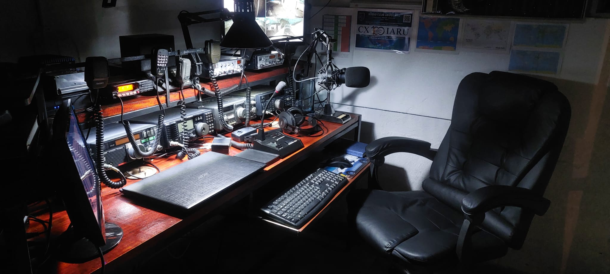

📡 CÓMO NACIÓ ESTACIÓN CHARLY: mi historia como radioaficionado
Desde San José de Mayo, Uruguay, transmitiendo como CX5EC-CVC5028, nace este blog con un solo objetivo: compartir una pasión que va más allá de la frecuencia. Estación Charly no es solo mi shack, es una trinchera de comunicación.🎙️ ¿Qué significa para mi ser Radioaficionado?
Llevo años explorando el espectro con disciplina táctica y mente técnica. Mi indicativo es mi firma en el aire; una identidad que representa constancia, aprendizaje y comunidad.
🌍 Todo comenzó con curiosidad
Una radio de onda corta vieja, una antena improvisada, y mucha voluntad. Así empezó esta historia. Aprendí lo que es un QSO, cómo se eleva una señal y lo emocionante de hablar con alguien a miles de kilómetros sin internet de por medio.
🛠️ ¿Por qué un blog?
Porque quiero devolver al aire lo que me dio: conocimientos, amigos y proyectos apasionantes. Aquí encontrarás desde guías para armar antenas hasta relatos de mis contactos más memorables. Todo bajo una estética que respira orden, técnica y estilo táctico.
📌 Qué vas a encontrar en Estación Charly:
- Guías simples y aplicables para otros CX y HF lovers
- Historias reales desde el shack
- Proyectos técnicos con alma DIY
- Una comunidad que comparte sin interferencias
Esta es solo la primera transmisión. Mantenete en frecuencia. Estación Charly apenas comienza.